1핀톡은 이런 앱이에요
현장 도면(PDF·DWG) 위에 번호 핀을 찍고, 그 자리에 내용·사진·댓글을 남기는 앱이에요. 하자뿐 아니라 현장 이슈, 도면 확인 요청, 협력업체 전달사항까지 위치와 함께 기록해요.
- 팀별 색 핀: 공사안전품질전기설비. 핀 이름은 팀 글자 + 팀 안 번호예요(공1, 안2 …).
- 함께 쓰기: 로그인한 사람끼리 협업 도면의 핀·사진·댓글이 몇 초 안에 서로 들어가요.
- 사진대지 PDF: 핀 표시 도면, 팀·업체별 현황표, 조치 전·후 사진대지를 한 번에 만들어 카톡으로 보내요.
- 신호가 없어도: 지하층처럼 인터넷이 끊겨도 핀과 사진은 휴대폰에 보관됐다가 다시 연결되면 자동으로 올라가요.
2설치 (홈 화면에 추가)
앱스토어 없이 인터넷 주소로 열어요. 한 번 홈 화면에 추가하면 일반 앱처럼 아이콘으로 열려요.
- 아이폰: 사파리에서 daegeon1208-ui.github.io/safety-check/pins/ 를 열고, 아래 공유 버튼(□↑) → 홈 화면에 추가.
- 안드로이드: 크롬에서 같은 주소를 열고, 오른쪽 위 ⋮ → 홈 화면에 추가(또는 앱 설치).
3처음 연결과 로그인
처음 열면 ① 서버 연결 → ② 로그인 두 단계가 나와요. 관리자가 보낸 자동 연결 링크로 열면 서버 주소와 PIN이 저절로 들어가서 ② 로그인부터 시작해요.
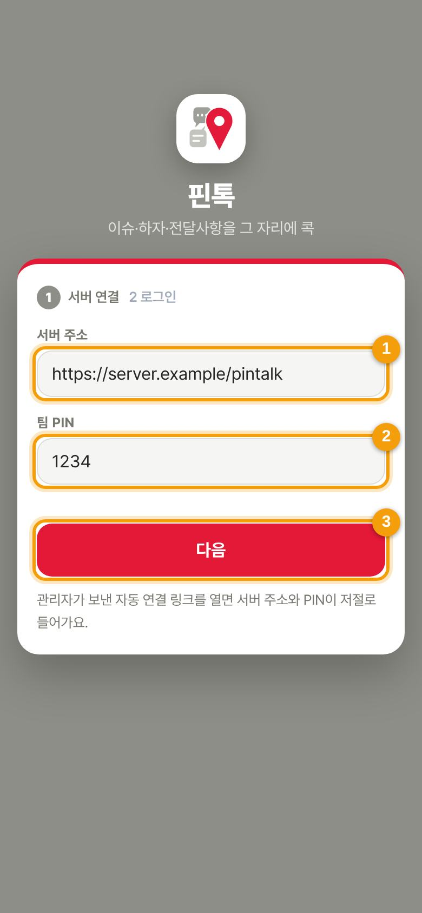
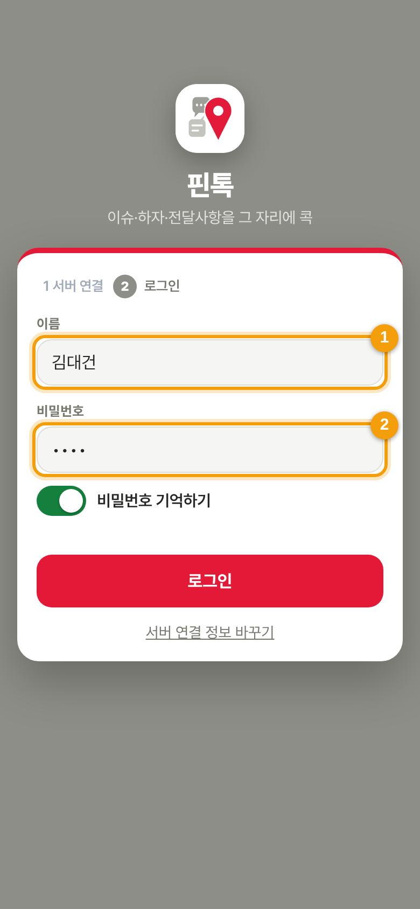
① 서버 연결
- 서버 주소: 관리자에게 받은 주소를 그대로 넣어요.
- 팀 PIN: 관리자에게 받은 번호예요.
- 다음을 누르면 로그인 화면으로 넘어가요.
② 로그인
- 이름: 실명으로 넣어 주세요. 핀·댓글에 이 이름이 표시돼요.
- 비밀번호: 4자 이상. 처음 로그인하면 넣은 비밀번호로 바로 등록돼요.
- 비밀번호 기억하기를 켜 두면 다음부터 바로 열려요.
4도면 목록
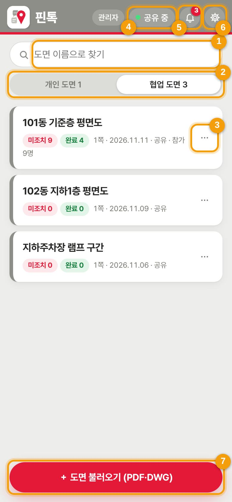
- 검색: 도면 이름 일부만 넣어도 바로 찾아요.
- 개인 도면 / 협업 도면 탭으로 나눠 봐요(14번 참고). 카드에는 미조치·완료 핀 수, 쪽 수, 올린 날짜, 참가자가 보여요.
- ⋯: 도면 설정을 열어요(5번).
- 공유 중: 서버 연결 상태예요. 누르면 자동 연결 링크 보내기와 로그아웃이 있어요.
- 🔔 알림: 빨간 숫자는 아직 안 읽은 알림이에요(13번).
- ⚙️ 설정(15번).
- ＋ 도면 불러오기: 카톡·파일 앱에 받은 PDF나 캐드 DWG를 골라요. DWG는 휴대폰 안에서 PDF로 바꿔 넣어요.
5도면 설정과 쪽 편집
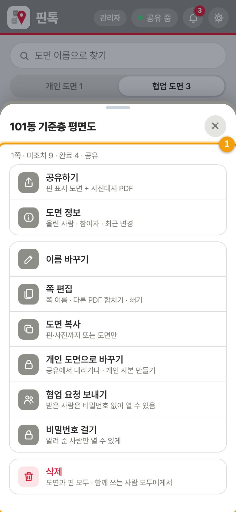
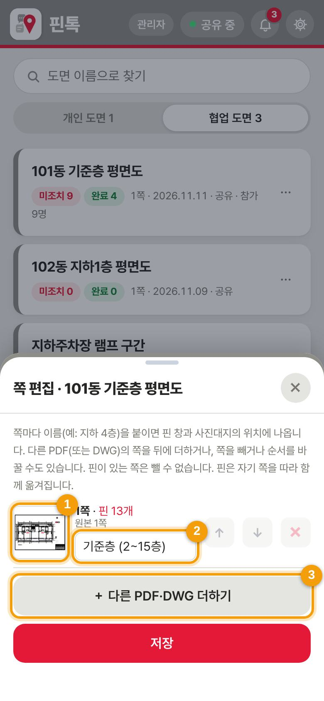
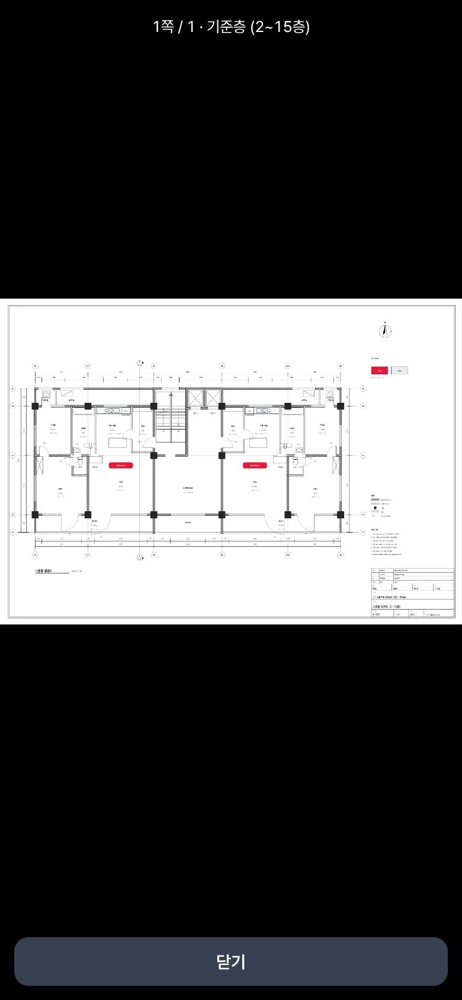
- 도면 설정에 있는 것들:
- 공유하기: 핀 표시 도면과 사진대지를 PDF로 만들어 보내요.
- 도면 정보: 올린 사람, 팀별 핀 수, 참가자, 최근 바뀐 핀.
- 이름 바꾸기 · 쪽 편집 · 도면 복사(핀·사진까지 또는 도면만).
- 개인 도면으로 바꾸기 / 협업 도면으로 바꾸기.
- 협업 요청 보내기, 비밀번호 걸기 (협업 도면, 올린 사람·관리자).
- 삭제: 협업 도면은 함께 쓰는 사람 모두에게서 지워지니 조심하세요.
쪽 편집
- 작은 도면을 누르면 크게 볼 수 있어요. 두 손가락으로 확대하고, ‹ › 로 다른 쪽을 넘겨 봐요.
- 쪽 이름(예: 지하 4층)을 붙이면 도면 화면과 사진대지에 이 이름이 나와요.
- 다른 PDF·DWG 더하기로 쪽을 합치고, ↑ ↓ 로 순서를, ✕ 로 쪽을 빼요. 핀이 있는 쪽은 뺄 수 없어요.
6도면 화면과 거르기
도면을 누르면 열려요. 두 손가락으로 벌리면 확대, 한 손가락으로 끌면 이동이에요.
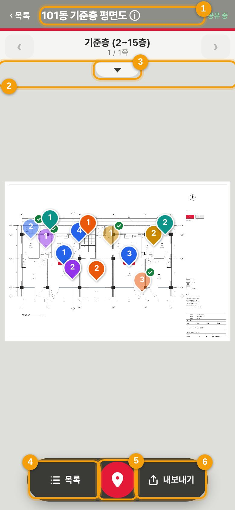
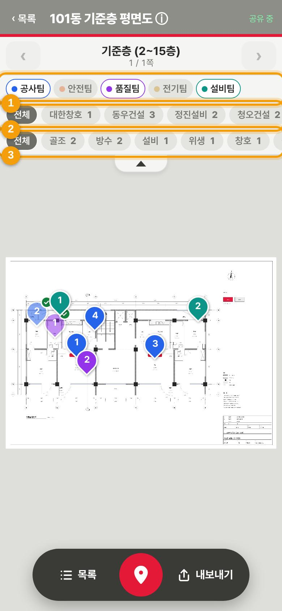
도면 화면
- 도면 이름(ⓘ): 누르면 도면 정보가 나와요.
- 팀 · 업체 · 공종 줄: 보고 싶은 핀만 골라 봐요.
- ▲ 탭: 위로 밀면 거르기 줄이 접히고, 아래로 밀면 펼쳐져요. 도면을 넓게 보고 싶을 때 접으세요.
- 목록: 찍은 핀과 댓글을 한눈에(11번).
- 핀 버튼: 핀을 찍고 고정하는 가운데 빨간 버튼(7번).
- 내보내기: 사진대지 PDF나 부분 캡처(12번).
거르기
- 팀 버튼을 누를 때마다 그 팀 핀이 보였다 숨었다 해요. 여러 팀을 함께 볼 수 있어요.
- 업체 줄과 3 공종 줄은 고른 팀의 핀에 있는 업체·공종만 나와요. 전체를 누르면 거르기가 풀려요.
7핀 찍기
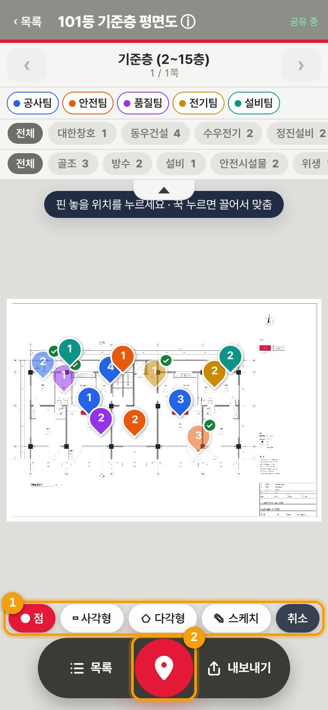
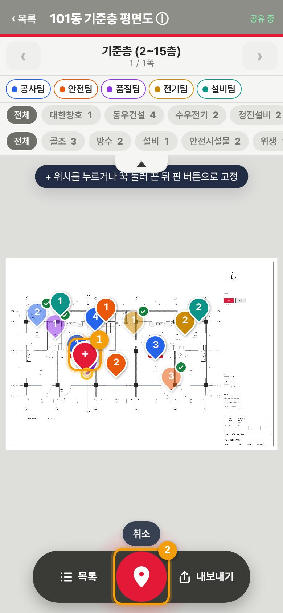
- 가운데 핀 버튼을 누르면 핀 찍기가 시작되고 아래에 핀 모양(점·사각형·다각형·스케치)이 나와요. 보통은 점이면 돼요.
- 도면에서 위치를 한 번 누르면 빨간 ＋ 임시 핀이 놓여요. 다른 곳을 누르면 옮겨지고, 꾹 누르면 끌어서 맞출 수 있어요.
- 핀 버튼을 한 번 더 누르면 고정되고 핀 창이 열려요. 그만두려면 취소.
8핀 내용과 사진
핀 창은 위에 도면, 아래에 내용이 반씩 보여요. 손잡이를 올리면 크게, 내리면 닫혀요. 적는 즉시 저장되고, 창 위 ‹ › 로 다음 핀으로 넘어가요.
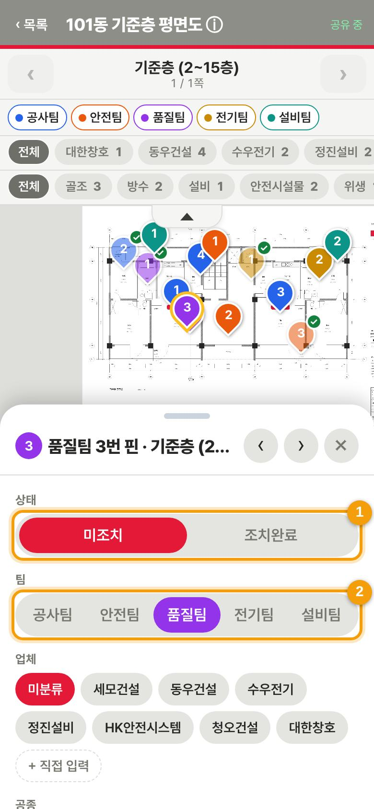
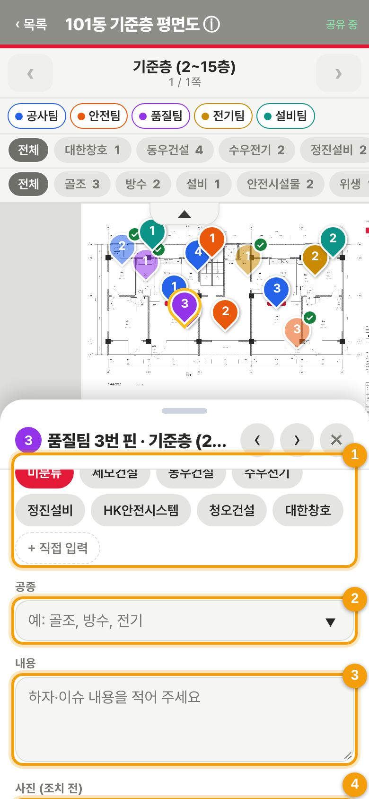
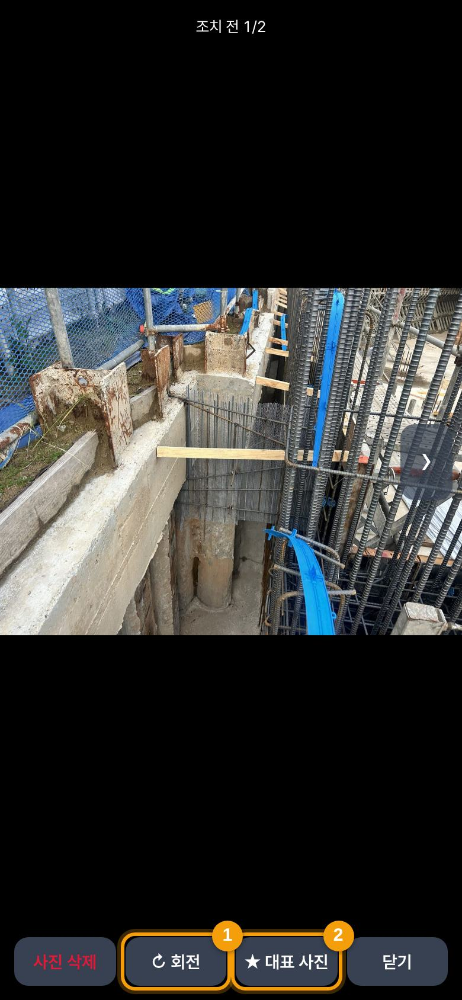
핀 창 위쪽
- 상태: 처음엔 미조치예요. 조치가 끝나면 조치완료(9번).
- 팀: 담당 팀을 고르면 핀 색과 번호가 그 팀 것으로 바뀌어요. 설정에서 내 기본 팀을 정해 두면 처음부터 골라져 있어요.
핀 창 아래쪽
- 업체: 현장 업체 목록에서 고르거나 직접 입력. 모르면 미분류.
- 공종: 예) 골조, 방수, 전기. 한 번 쓴 공종은 목록에서 골라요.
- 내용: 이슈·하자·전달사항을 적어요.
- 사진(조치 전): ＋를 눌러 찍거나 앨범에서 골라요. 여러 장 넣을 수 있어요.
사진 크게 보기: 두 손가락으로 벌리거나 두 번 누르면 확대, 옆으로 밀면 다음 사진이에요.
- ↻ 회전: 누울 때마다 시계 방향 90°.
- ☆ 대표 사진: 사진대지에 들어갈 사진을 정해요.
9조치완료
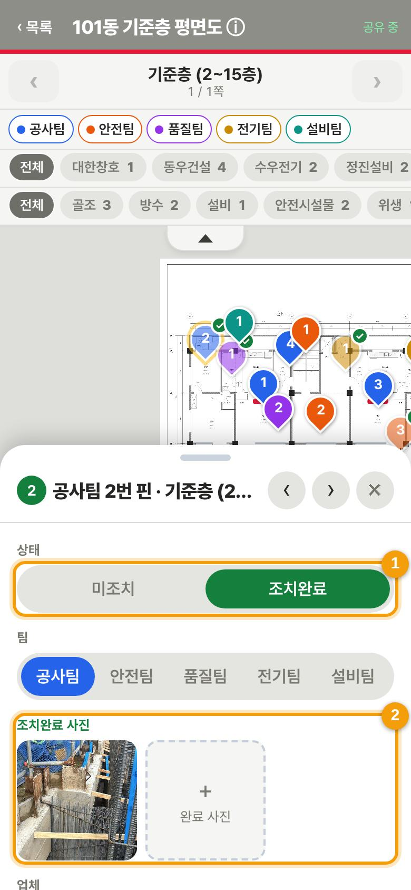
- 조치완료를 누르면 누른 사람과 시각이 기록되고, 핀을 만든 사람에게 알림이 가요.
- 조치완료 사진 칸이 생겨요. 조치 후 사진을 넣으면 사진대지에 조치 전·후가 나란히 들어가요.
다른 사람이 만든 핀도 조치완료와 조치 후 사진은 누구나 넣을 수 있어요.
10댓글
협업 도면의 핀에는 댓글을 달 수 있어요. 질문, 확인 요청, "오늘 오후까지 하겠습니다" 같은 답을 핀 위치와 함께 남겨요.
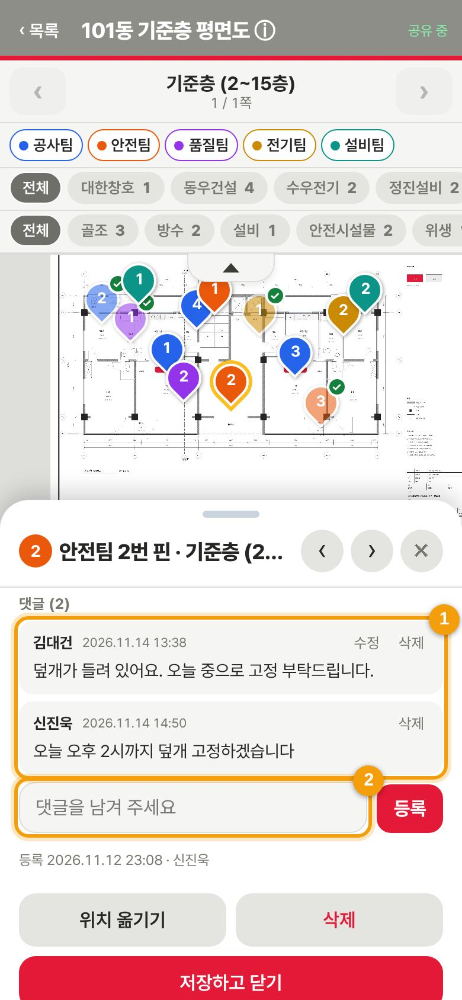
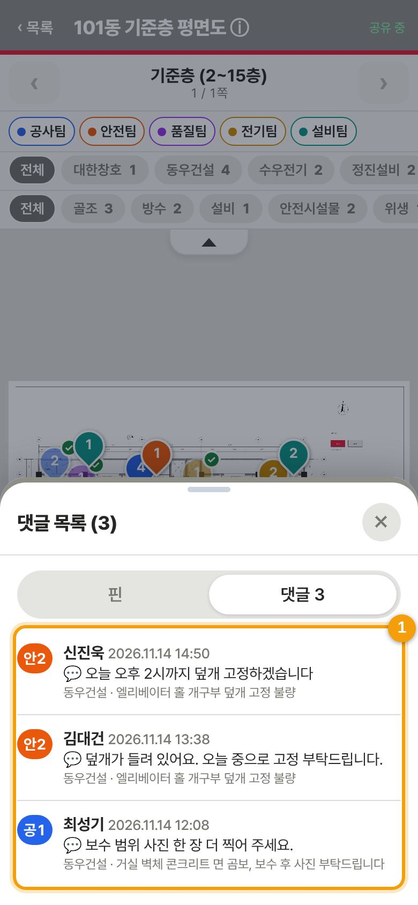
핀 창의 댓글
- 댓글은 오래된 것부터 쌓여요. 내 댓글은 수정(‘수정됨’ 표시)·삭제할 수 있어요.
- 댓글 칸에 적고 등록. 핀을 만든 사람과 그 핀에 댓글 단 사람에게 알림이 가요.
목록 › 댓글 탭
- 그 도면의 댓글을 최신순으로 모아 봐요. 누르면 그 핀으로 바로 가요.
11핀 목록
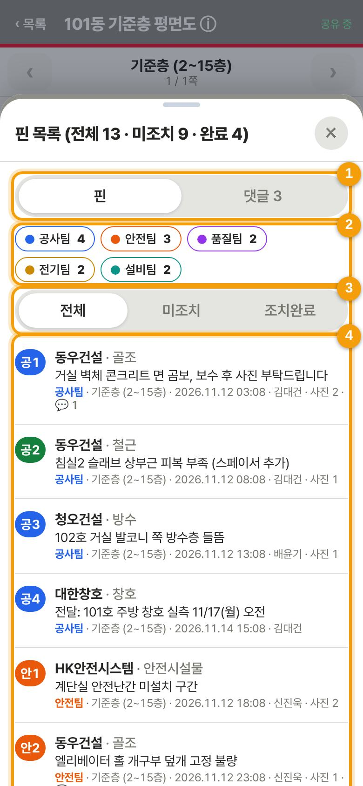
- 핀 · 댓글 탭(협업 도면).
- 팀으로 거르기(여러 팀 가능).
- 전체 · 미조치 · 조치완료로 거르기.
- 업체·공종, 내용, 쪽, 등록일·등록자, 사진·댓글 수가 보여요. 누르면 도면에서 그 핀으로 이동해요.
12내보내기 (사진대지 PDF)
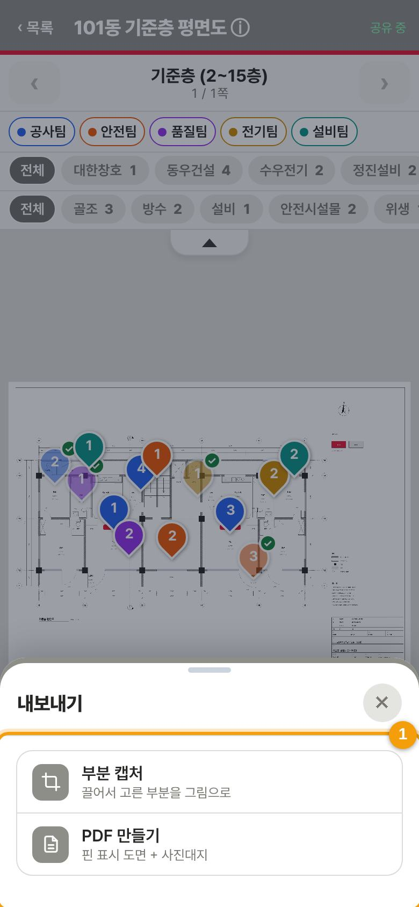
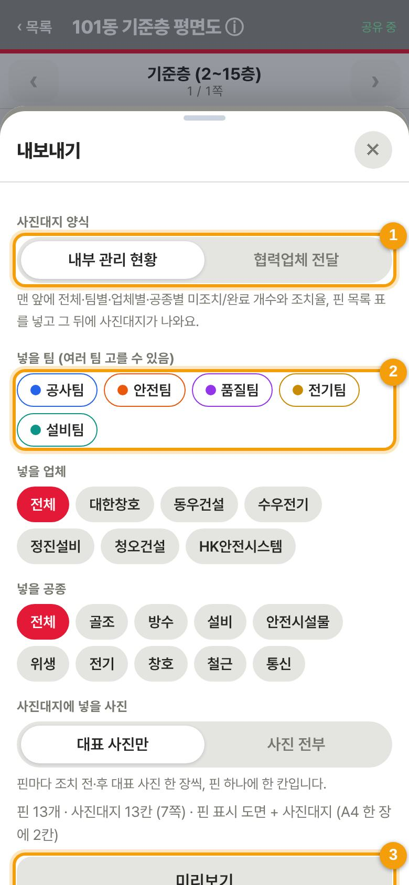
내보내기를 누른 모습
- 부분 캡처: 도면 일부를 그림으로 만들어요(펜으로 표시 가능). PDF 만들기: 핀 표시 도면 + 사진대지.
PDF 만들기
- 사진대지 양식: 내부 관리 현황은 맨 앞에 전체·팀별·업체별·공종별 미조치/완료와 조치율, 핀 목록 표가 들어가요. 협력업체 전달은 업체별로 묶고 우리 쪽 등록자·팀은 빼요.
- 넣을 팀 · 업체 · 공종, 넣을 사진(대표 사진만 / 사진 전부)을 골라요.
- 미리보기로 먼저 확인하고, PDF 만들기 → 파일 이름 확인 → 보내기로 카톡 등에 바로 보내요.
만들어지는 PDF는 이렇게 생겼어요(내부 관리 현황).


13알림
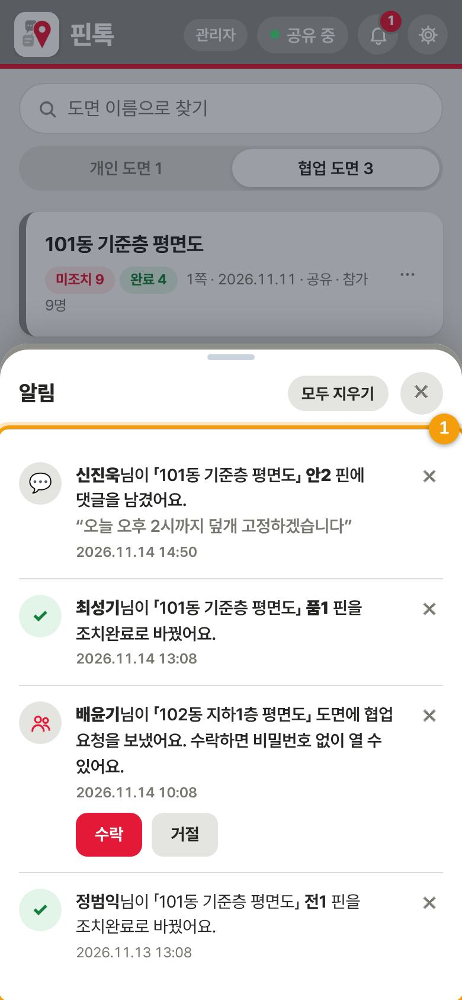
- 이럴 때 알림이 와요: 내 핀이 조치완료됐을 때, 협업 요청을 받았을 때(수락·거절), 내 핀이나 내가 댓글 단 핀에 새 댓글이 달렸을 때. 알림을 누르면 그 도면·핀으로 가요. ✕ 로 하나씩, 모두 지우기로 한 번에 지워요.
14함께 쓰기 (공유)
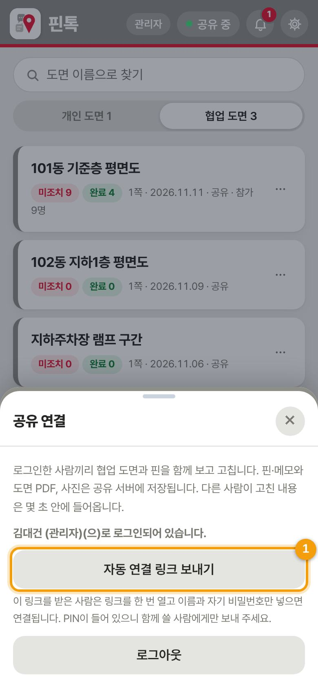
- 자동 연결 링크 보내기: 서버 주소와 PIN이 담긴 링크를 카톡으로 보내요. 받은 사람은 링크를 열고 이름·비밀번호만 넣으면 돼요.
| 협업 도면 | 개인 도면 | |
|---|---|---|
| 저장 위치 | 공유 서버 + 내 휴대폰 | 내 휴대폰에만 |
| 누가 보나 | 로그인한 사람 모두 (비밀번호를 건 도면은 아는 사람·초대받은 사람만) | 나만 |
| 핀·사진·댓글 | 몇 초 안에 서로 들어가요 | 나만 보고, 댓글은 없어요 |
| 인터넷 | 필요 (끊기면 휴대폰에 모아 두었다가 연결되면 보냄) | 없어도 돼요 |
| 쓰면 좋은 때 | 팀과 이슈·하자·전달사항을 함께 관리 | 개인 메모, 연습, 아직 공유하기 이른 도면 |
- 협업 요청: 도면 ⋯ → 협업 요청 보내기에서 이름을 검색해 고르면, 받은 사람은 알림에서 수락하고 비밀번호 없이 열 수 있어요.
- 참가자: 그 도면에 핀을 올렸거나 조치완료한 사람이 도면 정보와 목록 카드에 나와요.
- 권한: 남의 핀 내용 수정·삭제·이동은 관리자만, 조치완료와 조치 후 사진은 누구나.
15설정
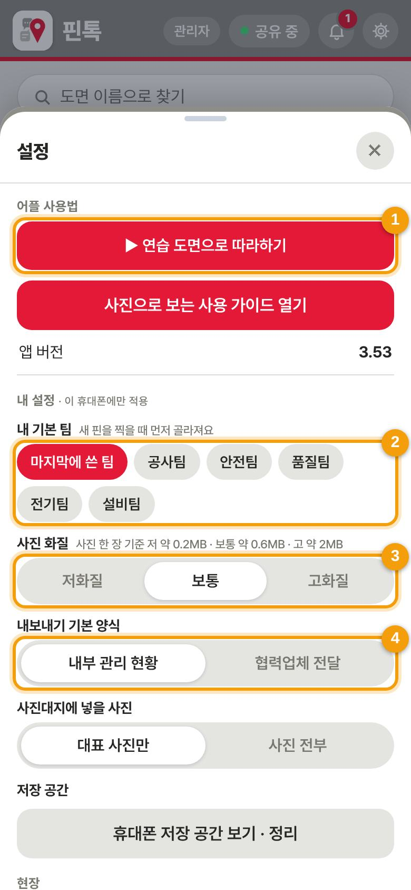
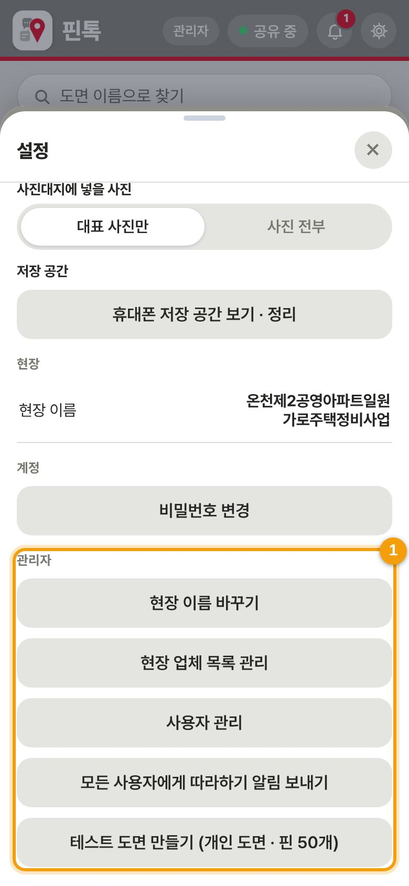
설정
- 어플 사용법: 연습 도면으로 따라하기, 이 가이드 열기.
- 내 기본 팀: 새 핀을 찍을 때 먼저 골라지는 팀.
- 사진 화질: 사진 한 장 기준 저화질 약 0.2MB · 보통 약 0.6MB · 고화질 약 2MB. 보통이면 사진대지에 충분해요.
- 내보내기 기본 양식과 넣을 사진. 아래에 휴대폰 저장 공간 보기·정리, 현장 이름, 비밀번호 변경(지금 비밀번호 확인 → 새 비밀번호 두 번)이 있어요.
관리자
- 현장 이름 바꾸기(사진대지 맨 위), 현장 업체 목록 관리, 사용자 관리(관리자 지정·비밀번호 초기화), 모든 사용자에게 따라하기 알림, 테스트 도면 만들기(핀 50개 · 개인 도면).
16따라하기로 연습
앱 안에서 견본 도면(공동주택 기준층 평면도)을 열고, 테두리가 가리키는 버튼을 직접 눌러 가며 배워요. 25단계로 핀 찍기부터 목록·내보내기·도면 관리·알림·설정까지 다뤄요. 견본 도면은 개인 도면이라 다른 사람에게 보이지 않아요.
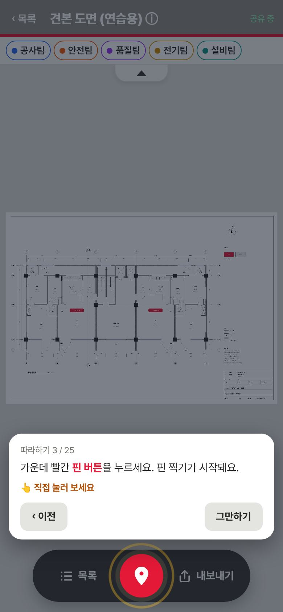
설정 → ▶ 연습 도면으로 따라하기로 언제든 다시 시작해요. 중간에 ‹ 이전으로 돌아가거나 그만하기로 끝낼 수 있어요.
17자주 묻는 질문
- 지하층처럼 신호가 안 터지는 곳에서도 되나요?
- 네. 한 번 열어 본 도면은 휴대폰에 저장돼 있어서 열리고, 그때 찍은 핀과 사진은 휴대폰에 보관돼요. 위쪽에 ‘오프라인 · 휴대폰에 보관’이 보이고, 신호가 잡히면 자동으로 올라가요.
- 핀 번호가 바뀌었어요.
- 두 사람이 동시에 같은 팀 번호를 쓰면 나중에 올린 쪽이 다음 빈 번호로 바뀌어요. 지운 번호는 다음 핀이 다시 써요.
- 사진이 많아 휴대폰 용량이 걱정돼요.
- 설정 → 휴대폰 저장 공간에서 공유 서버에 이미 올라간 사진을 휴대폰에서 지울 수 있어요. 필요할 때 다시 받아요. 사진 화질을 ‘저화질’로 두면 용량이 1/3로 줄어요.
- DWG 도면 선이 얇아요.
- DWG는 휴대폰 안에서 PDF로 바꿀 때 모든 선을 얇은 선으로 그려요. 선 굵기가 중요하면 캐드에서 PDF로 뽑아 올려 주세요.
- 다른 사람 핀을 고칠 수 없어요.
- 내용 수정·삭제·이동은 만든 사람과 관리자만 할 수 있어요. 대신 댓글로 요청하거나, 조치완료와 조치 후 사진은 누구나 넣을 수 있어요.